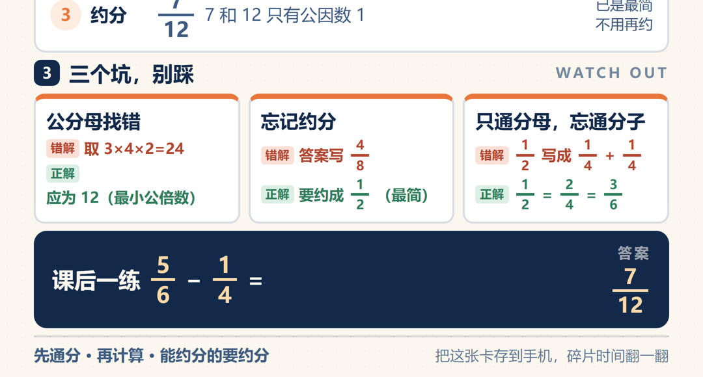

这个痛点，是不是你
痛点卡 · 案例04-4 形态四·知识卡片《分数加减法（异分母）》
依据：子Agent执行规范.md 第〇节「痛点先行」+ 〇补「痛点提取细则」
出处：手册Markdown/第04章/第04章.md
一、痛点原句（引用手册原文）
位置1 · 形态四引入（第04章 形态四：知识卡片，让课在课后还"活着"）：
"这是传统课件完全没有的部分，也是新形态课件最有价值的地方之一。
下课之后，学生怎么复习？翻笔记？翻课本？很多学生下课就忘了。
新形态课件多给一步：把当堂内容，浓缩成一张视觉化知识卡片。手机上就能看，碎片时间翻一翻，知识点就复习了。"
位置2 · 章首导入（第04章 一、你做课件，是不是"上课放完就没了"？）——本形态直接对应的那句：
"更扎心的是，你辛苦做的PPT，上课放完，学生下课就忘了。它完成了一次'展示'，但没有留下任何能让学生课后带走的东西。"
位置3 · 章末收束（四、同一节课，四种形态走一遍）：
"同一节课，你备一次，四种形态。课堂上讲得清、玩得动，下课后学生还能带着复习。"
"这一章，带走一句话：'同一个知识点，别只做PPT。让它能翻、能玩、能被带走，才是新形态课件。'"
位置4 · 手册自曝的二次痛点（进阶 · 出图环节）：
"实测发现一个坑：内置引擎出图，效果一般。文字容易乱码、排版糙。原因是 Baoyu Infographic 这个技能，其实只干'设计师'的活。"
"baoyu-infographic 管脑子，baoyu-image-gen 管手：一个负责把内容和prompt写好，一个负责用更胜一筹的引擎把图渲染出来。"
二、痛点主体
- 谁：五年级数学老师（本案例即"上完《异分母分数加减法》第2课时"的老师）。
- 场景：下课后。课上完，PPT 收进电脑，学生手里什么都没剩下。
- 学情（引自备课素材）：本课重难点是"理解通分的必要性，会找最小公倍数作公分母"；三个易错点（公分母找错 / 忘记约分 / 只通分母忘通分子）是当堂懂了、回家就忘的典型。
三、旧做法的代价
- 课后学生怎么复习：翻笔记、翻课本——笔记是抄的、课本是别人的话，没有一个"这是我今天这节课"的抓手。
- 结果："很多学生下课就忘了"。前面三种形态（PPT / HTML / 互动）都发生在课堂上，课上得再好，下课那一刻就断线了。
- 老师这一侧的代价：传统做课件的流程里根本没有"课后"这一格——"这是传统课件完全没有的部分"。
四、想要的目标（做到什么程度算"解决好"）
- 把当堂内容浓缩成一张视觉化知识卡片：竖版 9:16、手机上能看、重点突出。
- 学生课后碎片时间翻一翻，知识点就复习了——"把课在课后还'活着'"。
- 卡片发到班级群，学生手机点开就能看，还能截图当复习资料（手册原话）。
- 【本案例自定验收】中文零乱码、算式一个数字都不能错、9:16 版面不溢出不被裁。
- 【本案例自定验收】卡片要真的能"复习"，不能只是一张漂亮海报——必须带算理图示与易错点对照。
五、【补全】
【补全】手册没讲透"为什么这一形态是新形态课件里最有价值的部分"： 前三种形态解决的都是课堂内的问题（讲得清 / 会动 / 玩得动），它们的有效期止于下课铃。而"学生下课就忘"这件事，恰恰发生在课堂之外——再好的课堂演示也覆盖不到。 所以这一形态的真正价值不在"多做一张图"，而在于把课件的生命周期从 40 分钟延长到课后：它是四种形态里唯一一个脱离老师、脱离教室、还能独立工作的产物。 这决定了两件事：① 它必须适合手机（学生手上只有手机）；② 它必须自解释（没有老师讲解，卡片自己得把话说完整）——这就解释了为什么本案例坚持要塞进"分数条图示"和"错解/正解对照"，而不是做成一张只有口诀和几个算式的漂亮图。
六、价值归类
✅ 目标导向：老师想让学生下课后还能复习、真能记住这节课 → 所以把当堂内容浓缩成一张手机能看的复习卡。 ❌ 非"工具理性"（不是为了"我有内容所以做张图发一发"）。
七、跨章线索
- 回扣第01章总纲（问答式 AI vs 能执行干活的 AI）：本案例里 AI 不是陪你讨论"卡片该放什么"，而是先把内容分析完、把布局风格定好、把 prompt 写好，再直接出图。
- 回扣本章章首那句"新形态课件，让它在课堂上能动起来，下课后还能被学生带走"："被学生带走"这件事，只有形态四做到了；形态一/二/三都在"课堂上"。
- 手册在这一形态自曝的坑（内置引擎出图乱码）→ 也正因如此，本案例在出图环节做了程序化版面断言（溢出即拒绝出图），把"排版糙"这个坑用工程手段堵住。
AI 是怎么解决的
产物 · 在线预览


质检图
构建自核验截图，点击查看原图
